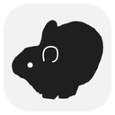

「人のふりをしているもの」を観察して記録する、デジタルのアート図鑑です。
生成AIを利用し、選定と加筆・修正を行って制作しています。

Milleaf
撮りためた思い出を、本にしませんか？
Milleaf は、VRChat のスクリーンショットから写真集を作る Windows アプリです。フォルダを選ぶと、似た写真をまとめてテンプレートに沿ってページを組みます。
- 発売日
- 2026年10月10日（土）
- 価格
- 体験版
- 無料。書き出しは1日3回までです。
- 書き出せる形
- PDF、連番画像、電子書籍（EPUB）、印刷所の入稿データ、VRChat の中で読める本（unitypackage）
- 動作環境
- Windows 10 / 11（64bit）
- 表示言語
- 日本語 / English / 한국어 / 繁體中文 / 简体中文
作者: Mimicria — Mitori